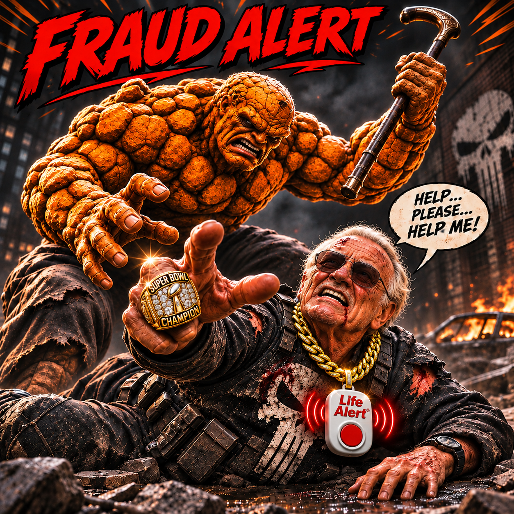
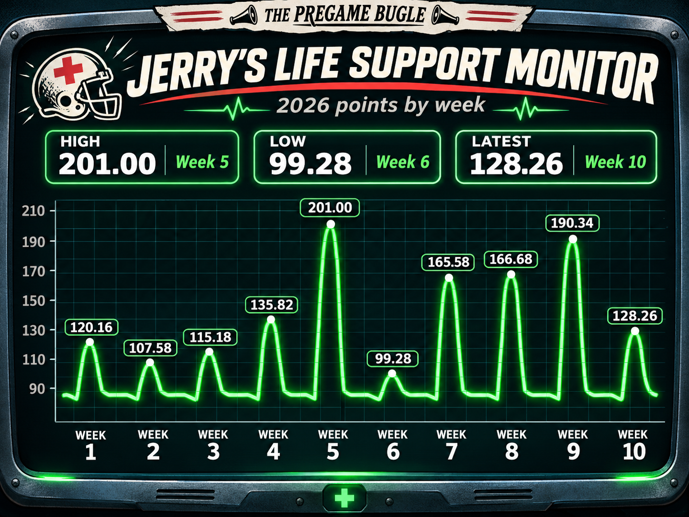

LIFE ALERT: AARON HAS FALLEN AND MAY NOT GET UP
Four explosive wins. Six brutal losses. Travis puts the Punisher on the pavement, and the emergency pendant is doing more work than his lineup.

BREAKING: Jerry's Justice League has fallen, and the Life Alert people are requesting hazard pay. After a 190-point explosion last week, Aaron arrived for Week 10 expecting another victory parade. Travis arrived with 151.42 points and apparently a large enough cane to knock the old man right out of his Super Bowl flashbacks.
Aaron managed 128.26. Travis put up 151.42. That's a 23.16-point loss for the league's most unpredictable senior citizen. If you heard somebody shouting “Help... please... help me!” from beneath a pile of rubble, relax. That's just Aaron trying to locate the offense he had seven days ago.
JERRY’S LIFE SUPPORT MONITOR
THE GREEN MACHINE · 10 WEEKS OF ACTUAL VITAL SIGNS
Pulse check: The cardiac monitor is a fucking roller coaster. The evidence is spectacular. 201.00 points in Week 5. Then 99.28 in Week 6. A pulse that strong doesn't just disappear; it gets repossessed. Then the Punisher reappeared with 190.34 in Week 9, only to stagger back down to 128.26 in Week 10.

FOUR WINS. SIX LOSSES. TWO DIFFERENT HUMAN BEINGS.
Here is the part that ought to trigger a league investigation: every single Aaron victory through Week 10 came with at least 165 points. Every one of his six losses came with fewer than 136. He isn't just inconsistent. He has two operating modes: championship executioner or a guy who needs a paramedic to change his fantasy lineup.
In his four wins, Aaron scored 201.00, 165.58, 166.68 and 190.34. In his six losses, he topped out at just 135.82. No middle ground. No reasonable adult supervision. When the roster works, it bulldozes people. When it doesn't, the nearest pharmacy starts stocking replacement batteries for his pendant.
THE DALLAS COWBOYS SCHOOL OF DELUSIONAL CONFIDENCE
As a Cowboys fan, Aaron has spent years mastering the art of pointing at past greatness while the present-day scoreboard files a restraining order. One minute he's showing everybody the championship ring. The next he's reaching for Life Alert because Travis just handed him his sixth loss of the season.
The rock giant in the artwork isn't a metaphor for Aaron's toughness. It's Travis, delivering the kind of reality check the league has been trying to administer all year. Aaron can keep the gold ring, the scary skull shirt, and the press conferences about how dangerous he is. None of them scored the missing 23.16 points.
Losing to Travis took the patient from threatening the league to begging the standings for a second opinion.
"The only thing keeping Jerry alive is other people's incompetence."
WEEK 11 — LOSS WISH LIST
| ROOT AGAINST | ROOT FOR | WHY |
|---|---|---|
| Mike (5–5) | Nick | Keep a playoff rival at five wins |
| Travis (5–5) | Hunter | Stop Travis pulling farther ahead |
| Alyssa (5–5) | DK | Hold another rival at five wins |
| Jake (2–8) | Aaron | Jerry needs his own fifth win |
WEEK 12 — LOSS WISH LIST
| ROOT AGAINST | ROOT FOR | WHY |
|---|---|---|
| Mike | Aaron | DOUBLE BENEFIT: Jerry wins and Mike loses |
| Travis | DK | Another pursuer stays within reach |
| Alyssa | Hunter | Prevent a direct rival gaining ground |
BUGLE DOCTOR’S ORDERS: If Jerry beats Jake but Mike, Travis, and Alyssa all win, his personal victory does less to close the gap. Rival losses are the oxygen; Aaron winning is the actual heartbeat. This is a rooting guide, not a claim that all listed losses are mathematically required.
THE BIG PICTURE: DK and Nick are both 8–2. Aaron is chasing the 5–5 pack of Mike, Travis, and Alyssa for a top-five playoff berth. Every rival loss helps. Every Aaron loss makes the machine beep louder.
OFFICIAL BUGLE MEDICAL BULLETIN
Condition: unstable. Prognosis: wildly unpredictable. Record: 4–6.
Aaron remains capable of dropping 190 or 200 on absolutely anybody. He is also capable of following that performance with a total that looks like his starting lineup got stranded at a senior center bingo tournament.
LIFE ALERT: AARON HAS FALLEN AND MAY NOT GET UP. The Bugle has contacted emergency services. They asked whether his team had tried scoring more points.